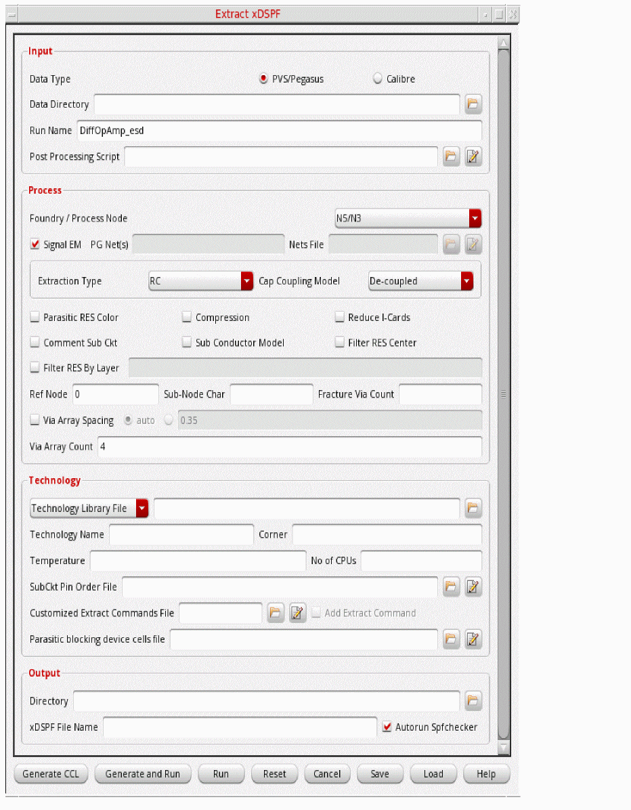

6
xDSPF Generation using Quantus
A Detailed Standard Parasitic Format (xDSPF) file is a third-party netlist file that is used to provide all the parasitic information of the design for performing simulations using the Spectre APS/XPS simulators.
The xDSPF file is created using an extractor. This file is then used as the input for performing a simulation. The simulation database that is generated is used to perform EMIR analysis in Voltus-Fi-XL. However, if you are using Quantus for extraction, you can also generate the xDSPF file from within Voltus-Fi-XL.
To create an xDSPF file, you can use either the GUI or batch mode. In batch mode, run the extract_xdspf command to create the file.
Related Topics
- Generating xDSPF File
- extract_xdspf (batch command)
- Extract xDSPF Form Description
Generating xDSPF File
You can generate an xDSPF file using Quantus in Voltus-Fi-XL. This file is then used as the input for performing a simulation, and the generated simulation database is used to perform EMIR analysis in Voltus-Fi-XL.
Before generating the xDSPF file, ensure the following:
- The Quantus hierarchy is available as the software calls the Quantus binary from this path.
- The Pegasus, PVS, or Calibre run is performed successfully to generate the Pegasus, PVS, or Calibre database, which is the input database for generating the xDSPF file using Quantus.
- The SPF Checker utility is located at the MMSIM/Spectre installation directory. SPF Checker works only when the top-level Quantus run is successful.
To generate an xDSPF file, perform the following steps:
- Specifying Input Data Information
- Specifying Process Node-Specific Information
- Specifying Technology Data Information
- Specifying Output Information
Specifying Input Data Information
-
Choose Extraction – Extract DSPF.
The Extract xDSPF form is displayed.
 - Select one of the Data Type options: PVS/Pegasus, Calibre, or Assura.
- Specify the Data Directory.
- Specify the Run Name.
-
Specify values for Lib Name, Cell Name, and View Name.
These options are available only when Assura is selected as the data type. - Specify the Post Processing Script.
Specifying Process Node-Specific Information
- Select a Process Node.
- Select Signal EM if you want signal nets to be included in the xDSPF file.
-
Specify the power and ground nets in the PG Net(s) field.
You can specify a value here only when the Signal EM option is deselected. -
Specify the Nets File.
If the Nets File is specified, the Signal EM and PG Net(s) options are ignored. - Select an Extraction Type.
- Select a coupling mode in the Cap Coupling Model field.
- Select the following check boxes, if required: Parasitic RES Color, Compression, Reduce I-Cards, Comment Sub Ckt, Sub Conductor Model, and Filter RES Center.
- Select Filter RES By Layer if you want to specify the LVS layer name for which the minimum resistance value for the extracted parasitic resistors is to be applied.
- Specify the reference node in the Ref Node field.
- Specify the subnode identification character in the Sub-Node Char field.
- Specify the Fracture Via Count.
- Select Via Array Spacing and specify a value that will be used as the maximum distance criteria for grouping vias within the same array.
- Specify the Via Array Count.
Specifying Technology Data Information
- Specify either a Technology Library File or a Technology Directory.
- Specify the Technology Name and Corner if the Technology Library File is specified.
- Specify the Temperature at which the extraction will be performed.
- Specify the No of CPUs to be used during the Quantus extraction run.
- Specify the SubCkt Pin Order File.
- Specify the Customized Extract Commands File that contains user-defined commands. When you select Add Extract Command, the Voltus-Fi-generated extract commands override the user-defined extract commands.
- Specify the Parasitic blocking device cells file.
Specifying Output Information
- Specify the Directory in which the xDSPF file will be saved.
- Specify the xDSPF File Name.
- Select Autorun Spfchecker to automatically run the SPF Checker utility after the extraction run. This check box is selected by default.
After you specify the required values in the Input, Process, Technology, and Output group boxes of the form, click one of the following options to complete the task.
-
Click Generate CCL to create the common command language (CCL) file or the Quantus command file that will be used to run Quantus.
By default,vfiQuantus-<cellname>.cclis created and the file opens in the Voltus-Fi-XL console. You can view the file and modify it, if required. - Click Generate and Run to create the CCL file and run Quantus to create the xDSPF file in a single step. This is useful when you do not want to view the CCL file before running Quantus.
-
Click Run to select the CCL file to use for running Quantus. This is useful if you have modified the auto-generated CCL file.
The log is saved both in thevfiQuantus-<cellname>.logand in the Voltus-Fi-XL console.
Related Topics
- Extract xDSPF Form Description
- extract_xdspf (batch command)
- How to Generate xDSPF Using Quantus in Voltus-Fi (video)
- Customized Extract Commands File
- Voltus-Fi Quantus Log File
Extract xDSPF Form Description
Related Topic
Customized Extract Commands File
The customized extract commands file is a file in which you can specify extract commands as per your requirements. When this file is specified, the Voltus-Fi-generated common command language (CCL) file will not have any extract commands, and the commands from the customized extract commands file will be added in the Voltus-Fi-generated CCL file.
A sample customized extract commands file is as follows:
extract \
-selection "all" \
-type "rc_coupled"
extract \
-selection nets_file "file.txt" \
-type "none"
customextract file by using either single or multiple extract settings. Ensure that the commands are in the Quantus CCL file syntax because this file is added as is in the Voltus-Fi-generated CCL file.Related Topic
Voltus-Fi Quantus Log File
The Voltus-Fi Quantus log file (vfiQuantus-<cellname>.log) stores all the common command language (CCL) commands and the info, warning, and error messages issued by Voltus-Fi during the extraction run. This file is saved in the output directory that is specified in the Extract xDSPF form.
With every successive extraction run, the name of the log file is updated to vfiQuantus-<cellname>.log.(n-1). Here, n-1 is the run number. Therefore, the greater the numeric value in the filename, the more recent or latest that file is.
For example, after three extraction runs, the following log files are created:
-
vfiQuantus-<cellname>.log(log file for the first run) -
vfiQuantus-<cellname>.log.1(log file for the second run) -
vfiQuantus-<cellname>.log.2(log file for the latest run)
Related Topic
Voltus-Fi Extract xDSPF GUI Last File
The Voltus-Fi Extract xDSPF GUI last file (.vfiExtractDSPFGuiLast) is created by Voltus-Fi to save the settings of the Extract xDSPF form of the previous session. This file gets loaded automatically when the next session starts. If you do not want to load these settings, remove this file before starting the session. This file is created along with cds.lib.
The values specified in the .cdsinit file override the values of the .vfiExtractDSPFGuiLast file of the previous session.
Related Topic
Return to top